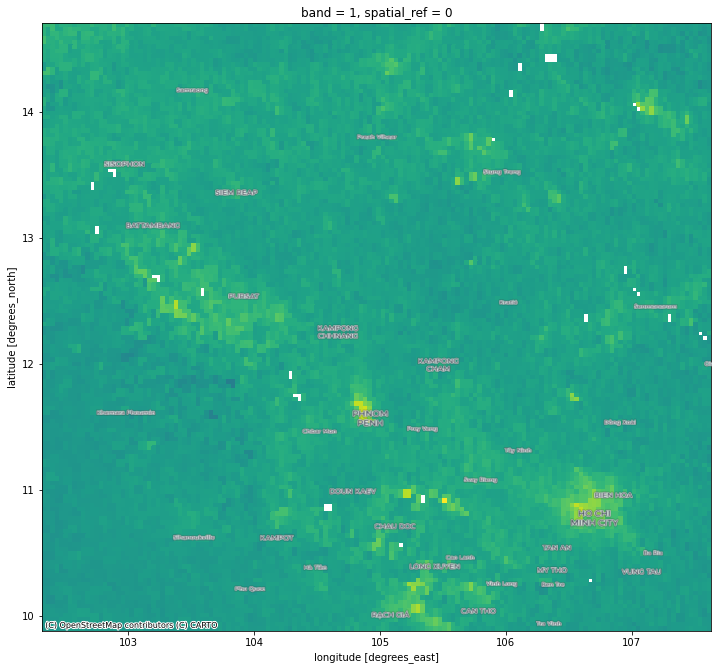

Cambodia regional pollution#
Important
Please see here for more details
import contextily
import xarray, rioxarray
import pandas, geopandas
import matplotlib.pyplot as plt
Boundaries#
url = (
"https://geonode.wfp.org/geoserver/wfs"\
"?format_options=charset:UTF-8&"\
"typename=geonode:khm_adm2_un&"\
"outputFormat=SHAPE-ZIP&"\
"version=1.0.0&"\
"service=WFS&"\
"request=GetFeature"
)
url
'https://geonode.wfp.org/geoserver/wfs?format_options=charset:UTF-8&typename=geonode:khm_adm2_un&outputFormat=SHAPE-ZIP&version=1.0.0&service=WFS&request=GetFeature'
cam = geopandas.read_file(url)
Bounding box:
bb = cam.total_bounds
Pollution#
Through the COG/STAC online repository for Sentinel 5P:
We can browse to February 28th of 2019, and connect to the \(NO_2\) tropospheric column of the required COG (S5P_OFFL_L2__NO2____20190228T051730_20190228T065900_07134_01_010202_20190306T072000):
url = (
"https://meeo-s5p.s3.amazonaws.com/COGT/"\
"OFFL/L2__NO2___/2019/02/28/"\
"S5P_OFFL_L2__NO2____20190228T051730_20190228T065900_07134_01_010202_20190306T072000"\
"_PRODUCT_nitrogendioxide_tropospheric_column_4326.tif"
)
url
'https://meeo-s5p.s3.amazonaws.com/COGT/OFFL/L2__NO2___/2019/02/28/S5P_OFFL_L2__NO2____20190228T051730_20190228T065900_07134_01_010202_20190306T072000_PRODUCT_nitrogendioxide_tropospheric_column_4326.tif'
We connect to it:
cog = xarray.open_rasterio(url)
And stream the window for Cambodia:
s5_cam = cog.rio.clip_box(*bb)
/opt/conda/lib/python3.8/site-packages/pyproj/crs/crs.py:280: FutureWarning: '+init=<authority>:<code>' syntax is deprecated. '<authority>:<code>' is the preferred initialization method. When making the change, be mindful of axis order changes: https://pyproj4.github.io/pyproj/stable/gotchas.html#axis-order-changes-in-proj-6
projstring = _prepare_from_string(projparams)
f, ax = plt.subplots(1, figsize=(12, 12))
s5_cam.where(s5_cam != s5_cam.rio.nodata)\
.squeeze()\
.plot(ax=ax, cmap="viridis", add_colorbar=False)
contextily.add_basemap(
ax,
crs="EPSG:4326",
source=contextily.providers.CartoDB.PositronOnlyLabels
)

Write out#
out_f = "cambodia_s5_no2.tif"
! rm -f $out_f
s5_cam.rio.to_raster(out_f)
! du -h $out_f
92K cambodia_s5_no2.tif